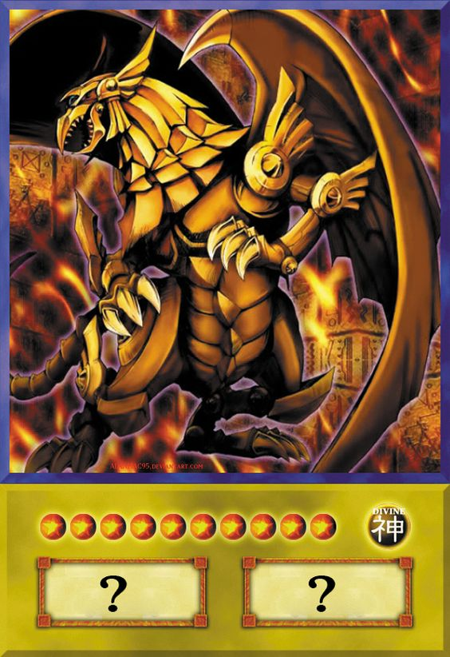
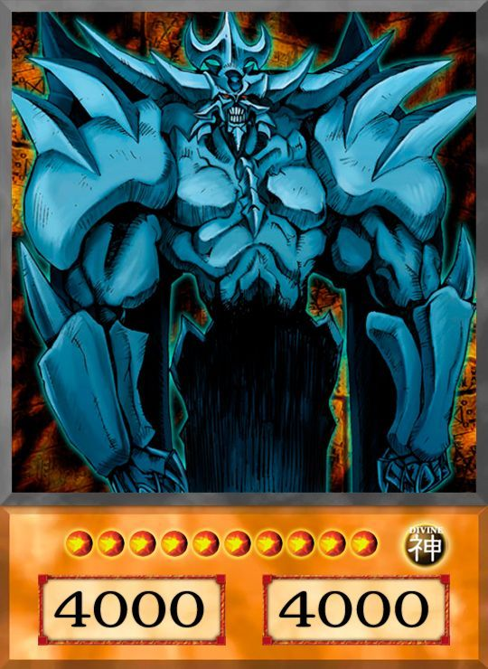
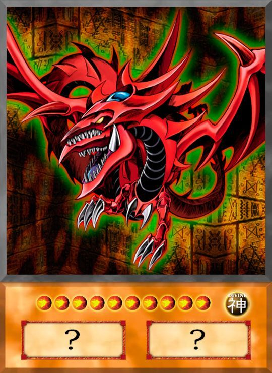
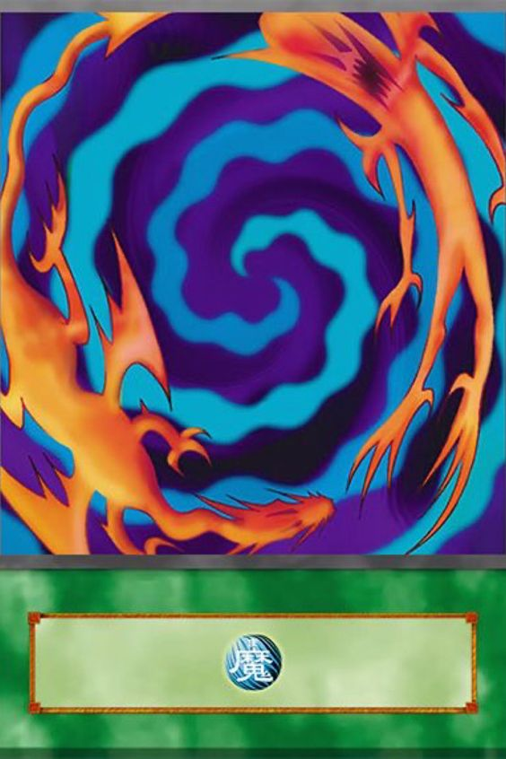
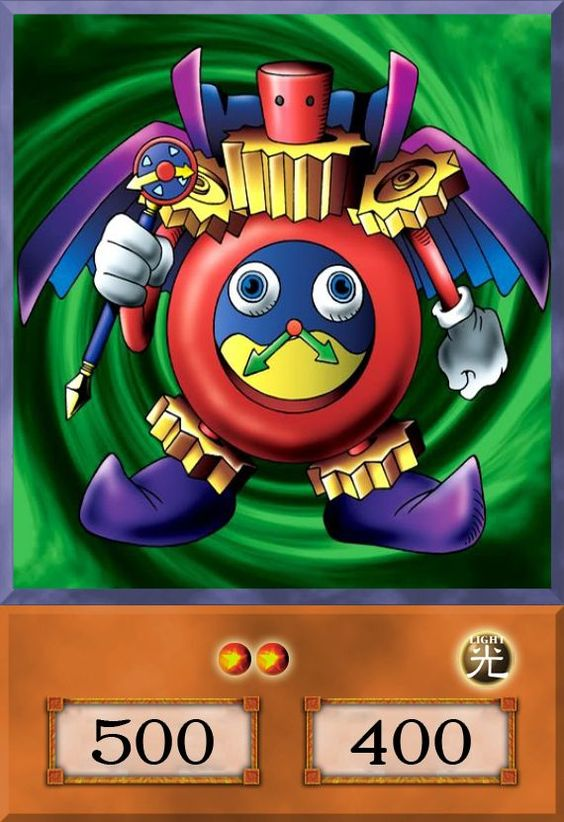
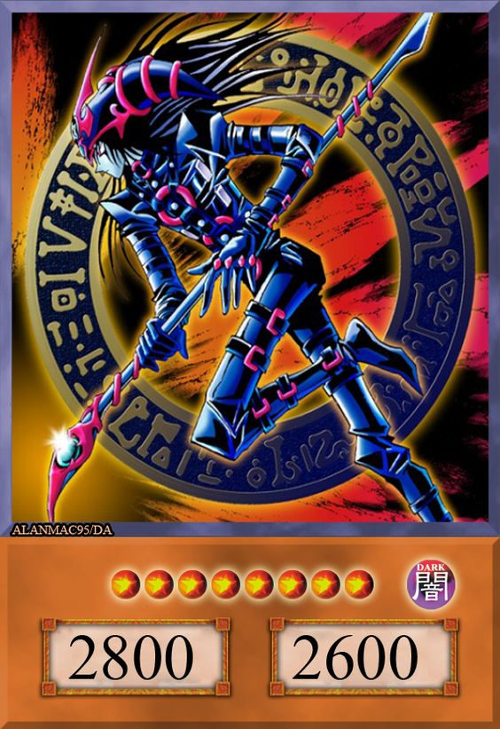

-
Dragão Alado de Rá
Descrição
Não pode ser Invocado por Invocação-Especial. Requer 3 Tributos para ser Invocado por Invocação-Normal (não pode ser Baixado Normalmente). A Invocação-Normal deste card não pode ser negada. Quando Invocado por Invocação-Normal, outros cards e efeitos não podem ser ativados. Quando este card for Invocado por Invocação-Normal: você pode pagar PV até restarem apenas 100; este card ganha ATK/DEF igual aos PV pagos. Você pode pagar 1000 PV e, depois, escolha 1 monstro no campo; destrua o alvo.
-
Obelisco
Descrição
Requer 3 Tributos para ser Invocado por Invocação-Normal (não pode ser Baixado Normalmente). A Invocação-Normal deste card não pode ser negada. Quando Invocado por Invocação-Normal, cards e efeitos não podem ser ativados. Nenhum duelista pode escolher este card como alvo de efeitos de card. Uma vez por turno, durante a Fase Final, se este card foi Invocado por Invocação-Especial: envie-o para o Cemitério. Você pode oferecer 2 monstros como Tributo; destrua todos os monstros que seu oponente controla. Este card não pode declarar um ataque no turno em que este efeito for ativado.
-
Slifer
Descrição
Requer 3 Tributos para ser Invocado por Invocação-Normal (não pode ser Baixado Normalmente). A Invocação-Normal deste card não pode ser negada. Quando Invocado por Invocação-Normal, cards e efeitos não podem ser ativados. Uma vez por turno, durante a Fase Final, se este card foi Invocado por Invocação-Especial: envie-o para o Cemitério. Ganha 1000 de ATK/DEF para cada card na sua mão. Se um ou mais monstros forem Invocados por Invocação-Normal ou Especial no campo do seu oponente em Posição de Ataque: esses monstros perdem 2000 de ATK e, depois, se algum deles tiver o ATK reduzido a 0 como resultado, destrua-o.
-
Polimerização
Descrição
Invoque por Invocação-Fusão 1 Monstro de Fusão do seu Deck Adicional, usando monstros da sua mão ou do campo como matéria.
-
Mago do Tempo
Descrição
Uma vez por turno: você pode lançar uma moeda e escolher cara ou coroa. Se você ganhar, destrua todos os monstros que seu oponente controla. Se você perder, destrua tantos monstros que você controla quanto possível e, se isso acontecer, sofra dano igual à metade do ATK total que esses monstros destruídos tinham enquanto estavam com a face para cima no campo.
-
Mago Negro do Caos
Descrição
Durante a Fase Final, se este card foi Invocado por Invocação-Normal ou Especial neste turno: você pode escolher 1 Magia no seu Cemitério; adicione-a à sua mão. Você só pode usar este efeito de "Mago Negro do Caos" uma vez por turno. Se este card destruir um monstro do oponente em batalha, depois do cálculo de dano: bana esse monstro do oponente. Se este card com a face para cima deixaria o campo, em vez disso, bana-o.